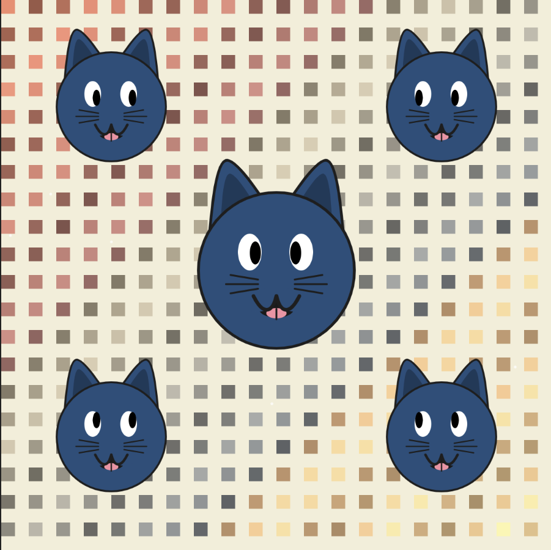

Wild Wallpaper Cat
A wild wallpaper design featuring a cat.

I created an animated cat wallpaper with one main cat in the center and four smaller cats placed diagonally to form an X. Each cat has its own look, with pointed ears, expressive eyes, detailed whiskers, and a mouth that moves. The eyes follow the mouse cursor, so the wallpaper feels interactive. The background changes and flickers gently, which makes the wallpaper more lively. I made sure all five cats move and change size together. I ran into some surprises while trying to make the mouths look real and keep the cats lined up, but I found solutions for both. Through this project, I learned how to group shapes, make repeating patterns, and animate based on time and what the user does. I also got better at organizing my code and adding special details to each cat.
Open Program